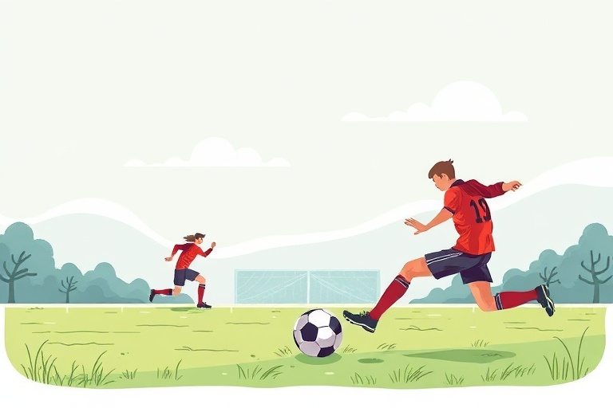

Beginner's Guide to Football: Core Rules, Essential Skills, and Practical Training Steps
Category: football | Language: en
Association football, commonly known as soccer, is played between two teams of eleven players on a rectangular grass or artificial turf pitch. The fundamental objective is straightforward: maneuver the ball past the opposing team into their goal without using your hands or arms, across two 45-minute halves. This guide is designed for adult beginners and young players who want to transition from casual spectators to confident participants on the pitch, whether joining an amateur local team or playing recreational weekend matches.
Understanding the offside rule is the biggest hurdle for newcomers, yet it rests on a clear principle of fair play. An attacking player is in an offside position if they are nearer to the opponent's goal line than both the ball and the second-last opponent (usually the last outfield defender, as the goalkeeper is the last opponent) at the exact moment the ball is passed to them. Being in an offside position is not an offense in itself; the referee only stops play if the player becomes actively involved by touching the ball, interfering with an opponent, or gaining an advantage. Additionally, accidental contact between the arm and the ball is not always an infraction, but moving your hand toward the ball or making your body unnaturally larger will result in a handball foul.
Restarts dictate the tempo of a match, and executing them correctly prevents unnecessary turnovers. When the ball crosses the sideline, play restarts with a throw-in, which requires you to face the field, keep both feet on or behind the line, and throw the ball with both hands directly over your head. If the attacking team sends the ball over the opponent's end line, the defending team receives a goal kick from the six-yard box. Conversely, if a defending player touches the ball last before it crosses their own end line, the attacking team takes a corner kick from the nearest corner arc. Fouls result in either direct free kicks—from which a goal can be scored immediately—or indirect free kicks, which require a second player to touch the ball before a goal counts.
Before attempting complex tricks, every beginner must master the first touch and the inside-foot push pass. To execute a stable pass along the ground, place your non-kicking foot roughly six inches beside the ball, pointing directly at your target. Lock the ankle of your kicking foot, rotate your hip slightly outward, and strike the center of the ball using the flat arch of your inside foot. Follow through smoothly in the direction of your teammate. When receiving an incoming pass, relax your ankle slightly upon contact to cushion the ball, keeping it within one step of your body rather than letting it bounce out of reach.
Dribbling is the skill that allows you to advance up the field while protecting possession under pressure. Beginners often make the mistake of kicking the ball several yards ahead and sprinting after it, which invites defenders to tackle easily. Instead, practice taking soft, calculated touches with every second or third stride, alternating between the outside edge and inside arch of your dominant boot. As you move, resist the urge to stare down at the ball; train your eyes to stay raised so you can scan open passing lanes, track defensive movements, and read pitch spacing in real time.
A practical, solo drill you can run three times a week requires only a size 5 football and a solid brick or concrete wall. Stand five yards away from the wall, pass the ball firmly against the surface using your right foot, control the rebound with your left foot, and immediately pass it back with your left. Repeat this sequence for ten minutes to build bilateral muscle memory. Next, set up five cones or plastic markers two yards apart in a straight line and slalom through them using only short, controlled touches with the outside and inside of one foot, then switch to the other foot on the return run.
Entering the sport safely requires basic, affordable equipment designed to protect your joints and lower legs. You need a properly fitted pair of football boots: firm ground (FG) boots with molded studs for natural grass, or turf trainers with flat, dimpled rubber soles for artificial pitches to prevent severe knee and ankle torque. Shin guards are mandatory in organized play and must be fully covered by long football socks. Before touching the ball, always complete five to ten minutes of dynamic warm-ups—such as high knees, leg swings, and lunges—to prepare your hamstrings, groin muscles, and calves for rapid acceleration and sudden directional shifts.
The most common tactical mistake among beginners is 'swarming' the ball, where entire teams bunch together like a school of fish. When everyone crowds the carrier, it compresses defensive pressure and eliminates passing angles. Force yourself to maintain positional discipline by staying wide on the wings or holding depth in midfield, trusting your teammates to deliver the pass when lanes open up. Another frequent technical error is leaning backward when shooting, which causes the ball to fly harmlessly over the crossbar; keep your chest and head positioned directly over the ball at the moment of strike to keep shots low and powerful.
Progress in football comes from consistent, low-cost technical repetition rather than expensive training gear or complicated playbooks. Now that you understand the primary rules, the mechanics of passing, and how to maintain spatial awareness, your immediate next step is to find an open patch of turf or a sturdy wall and complete twenty focused minutes of first-touch passing drills. Building comfort with the ball at your feet will dramatically reduce your hesitation on game day, allowing you to enjoy the sport with confidence.